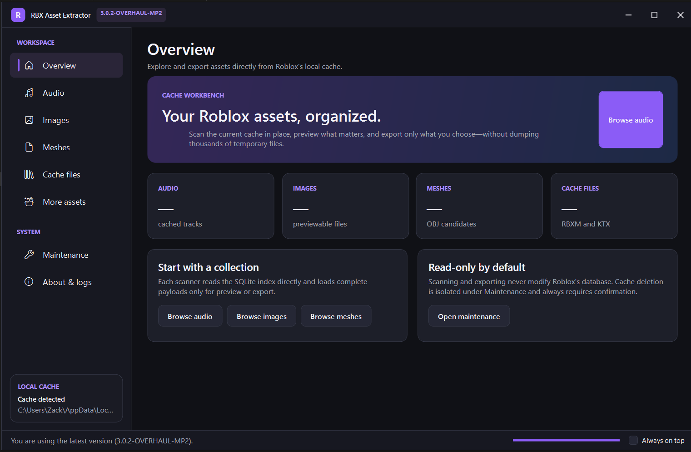

Audio, images, meshes, models, textures, fonts, thumbnails, and metadata — previewed and exported without dumping your entire cache to disk.
Free · Open source · 64-bit Windows

OGG and MP3 discovery, duration sorting, in-app playback and seeking, plus selected or bulk export.
PNG, JPEG, BMP, and WebP preview and export, with optional PNG conversion.
Roblox mesh detection with an interactive 3D preview and Wavefront OBJ export.
RBXM models plus KTX and KTX2 textures, filterable and exportable.
Cached thumbnails, TrueType/OpenType fonts, and JSON/XML/HLS playlist metadata.
Export a single result or an entire category at once, with background scanning and progress reporting.
Scans open Roblox's SQLite cache in read-only mode. Assets are only read when needed for identification, preview, playback, or export — nothing is copied into a temporary extraction folder, and your cached assets are never uploaded. Internet access is used only for version checks, creator messages, project links, and downloading an update when you approve it.
Download the latest release and run RBXAssetExtractor.exe. Releases bundle the required native SQLite and image libraries, but you need the .NET 10 Desktop Runtime (x64) installed — Windows will prompt you to install it automatically if it's missing.
%LocalAppData%\RBXAssetExtractor\Logs.